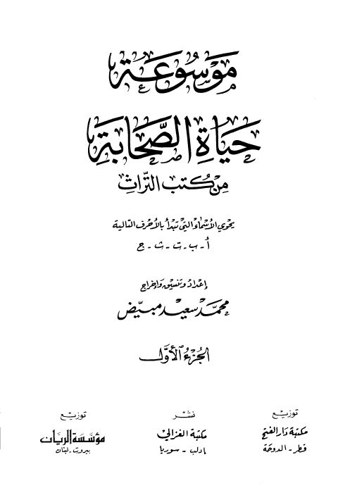

Downloads need an internet connection.
موسوعة حياة الصحابة من كتب التراث
Authors: محمد سعيد مبيض
Publishers: مؤسسة الريان مكتبة الغزالي مكتبة دار الفتح
**▫️ العنوان: موسوعة حياة الصحابة من كتب التراث** ▪️ المؤلف: #محمد_سعيد_مبيض ▫️ الناشر: #مكتبة_دار_الفتح • #مكتبة_الغزالي • #مؤسسة_الريان ▪️ تاريخ النشر: 1421هـ 2000م ▫️ بلد النشر: الدوحة، #قطر • إدلب، #سوريا • بيروت، #لبنان ▪️ الطبعة: 1 ▫️ عدد الأجزاء: 7 ▪️ الصفحات: 4298 ▫️ نوع الوعاء: #كتاب ▪️ التصنيف الرئيسي: #التراجم_والأعلام ۪